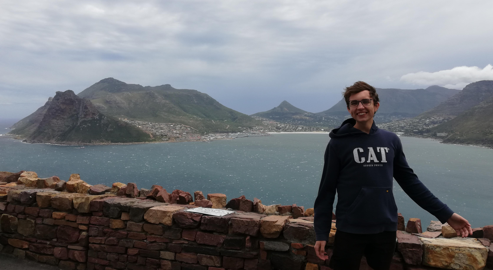

Hi, I'm
Willie Loftie-Eaton

About Me
I am a third year BSc Computer Science student at the University of Stellenbosch. I enjoy studying Mathematics, Statistics, and Computer Science. In my free time I practice guitar and run (training for a marathon). I hope to have an impactful career and tackle problems such as verification of information authenticity, AI safety and interpretability, and improved education/information access.
If you want to know more about me, you can visit my Notice Board where I will share things that interest me.
My CV can be found here.
My Work
CAlab
The goal of this project is to enable computations and visualizations of Cellular Automata. It is something I work on in my free time, and at the moment is capible of computing 1-dimensional Cellular Automata.
This website
This website serves to inform you about me, and is a place where I can share my ideas and work with the world.